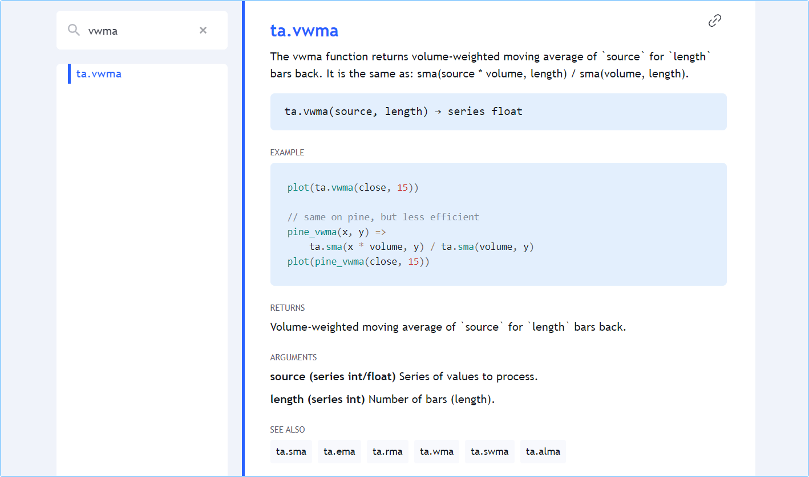

Pine Script® has hundreds of built-in variables and functions. They provide your scripts with valuable information and make calculations for you, dispensing you from coding them. The better you know the built-ins, the more you will be able to do with your Pine scripts.
In this page we present an overview of some of Pine Script®’s built-in variables and functions. They will be covered in more detail in the pages of this manual covering specific themes.
All built-in variables and functions are defined in the Pine Script® v5 Reference Manual. It is called a “Reference Manual” because it is the definitive reference on the Pine Script® language. It is an essential tool that will accompany you anytime you code in Pine, whether you are a beginner or an expert. If you are learning your first programming language, make the Reference Manual your friend. Ignoring it will make your programming experience with Pine Script® difficult and frustrating — as it would with any other programming language.
Variables and functions in the same family share the same namespace, which is a prefix to the function’s name.
The ta.sma() function, for example, is in the ta namespace,
which stands for “technical analysis”. A namespace can contain both variables and functions.
Some variables have function versions as well, e.g.:
high - low instead.timeframe specified, even if the chart’s timeframe is different.
The time(timeframe, session) function returns
the time of the bar’s open
from the timeframe specified, but only if it is within the session time.
The time(timeframe, session, timezone) function returns
the time of the bar’s open
from the timeframe specified, but only if it is within the session time in the specified timezone.Built-in variables exist for different purposes. These are a few examples:
syminfo namespace:
syminfo.basecurrency,
syminfo.currency,
syminfo.description,
syminfo.mintick,
syminfo.pointvalue,
syminfo.prefix,
syminfo.root,
syminfo.session,
syminfo.ticker,
syminfo.tickerid,
syminfo.timezone, and
syminfo.type.timeframe namespace:
timeframe.isseconds,
timeframe.isminutes,
timeframe.isintraday,
timeframe.isdaily,
timeframe.isweekly,
timeframe.ismonthly,
timeframe.isdwm,
timeframe.multiplier, and
timeframe.period.barstate namespace (see the Bar states page):
barstate.isconfirmed,
barstate.isfirst,
barstate.ishistory,
barstate.islast,
barstate.islastconfirmedhistory,
barstate.isnew, and
barstate.isrealtime.strategy namespace:
strategy.equity,
strategy.initial_capital,
strategy.grossloss,
strategy.grossprofit,
strategy.wintrades,
strategy.losstrades,
strategy.position_size,
strategy.position_avg_price,
strategy.wintrades, etc.Many functions are used for the result(s) they return. These are a few examples:
math namespace:
math.abs(),
math.log(),
math.max(),
math.random(),
math.round_to_mintick(), etc.ta namespace:
ta.sma(),
ta.ema(),
ta.macd(),
ta.rsi(),
ta.supertrend(), etc.ta namespace:
ta.barssince(),
ta.crossover(),
ta.highest(), etc.request namespace:
request.dividends(),
request.earnings(),
request.financial(),
request.quandl(),
request.security(),
request.splits().str namespace:
str.format(),
str.length(),
str.tonumber(),
str.tostring(), etc.input namespace:
input(),
input.color(),
input.int(),
input.session(),
input.symbol(), etc.color namespace:
color.from_gradient(),
color.new(),
color.rgb(), etc.Some functions do not return a result but are used for their side effects, which means they do something, even if they don’t return a result:
strategy namespace:
strategy.cancel(),
strategy.close(),
strategy.entry(),
strategy.exit(),
strategy.order(), etc.strategy namespace:
strategy.closedtrades.entry_bar_index(),
strategy.closedtrades.entry_price(),
strategy.closedtrades.entry_time(),
strategy.closedtrades.exit_bar_index(),
strategy.closedtrades.max_drawdown(),
strategy.closedtrades.max_runup(),
strategy.closedtrades.profit(), etc.Other functions return a result, but we don’t always use it, e.g.: hline(), plot(), array.pop(), label.new(), etc.
All built-in functions are defined in the Pine Script® v5 Reference Manual. You can click on any of the function names listed here to go to its entry in the Reference Manual, which documents the function’s signature, i.e., the list of parameters it accepts and the form-type of the value(s) it returns (a function can return more than one result). The Reference Manual entry will also list, for each parameter:
All built-in functions have one or more parameters defined in their signature. Not all parameters are required for every function.
Let’s look at the ta.vwma() function, which returns the volume-weighted moving average of a source value. This is its entry in the Reference Manual:
The entry gives us the information we need to use it:
What the function does.
Its signature (or definition):
ta.vwma(source, length) → series float
The parameters it includes: source and length
The form and type of the result it returns: “series float”.
An example showing it in use: plot(ta.vwma(close, 15)).
An example showing what it does, but in long form, so you can better understand its calculations. Note that this is meant to explain — not as usable code, because it is more complicated and takes longer to execute. There are only disadvantages to using the long form.
The “RETURNS” section explains exacty what value the function returns.
The “ARGUMENTS” section lists each parameter and gives the critical information concerning what form-type is required for arguments used when calling the function.
The “SEE ALSO” section refers you to related Reference Manual entries.
This is a call to the function in a line of code that declares a myVwma variable
and assigns the result of ta.vwma(close, 20) to it:
myVwma = ta.vwma(close, 20)
Note that:
source parameter.20 as the argument for the length parameter.We can also use the parameter names when calling the function. Parameter names are called keyword arguments when used in a function call:
myVwma = ta.vwma(source = close, length = 20)
You can change the position of arguments when using keyword arguments, but only if you use them for all your arguments. When calling functions with many parameters such as indicator(), you can also forego keyword arguments for the first arguments, as long as you don’t skip any. If you skip some, you must then use keyword arguments so the Pine Script® compiler can figure out which parameter they correspond to, e.g.:
indicator("Example", "Ex", true, max_bars_back = 100)
Mixing things up this way is not allowed:
indicator(precision = 3, "Example") // Compilation error!
When calling built-ins, it is critical to ensure that the arguments you use are of the form and type required, which will vary for each parameter.
To learn how to do this, one needs to understand Pine Script®’s type system. The Reference Manual entry for each built-in function includes an “ARGUMENTS” section which lists the form-type required for the argument supplied to each of the function’s parameters.